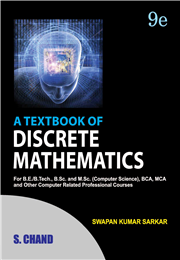

Complete Reference of JAVA Developed by Horbert Schildt
About the author
Herbert Schildt is a leading authority on the Java, C, C++, and C# languages, and is a master Windows programmer. His programming books have sold more than 3.5 million copies worldwide and have been translated into all major foreign languages. He is the author of the best-selling The Art of Java, Java: A Beginner’s Guide, and Swing: A Beginner’s Guide. Among his other bestsellers are C++: The Complete Reference, C++: A Beginner’s Guide, C#: The Complete Reference, and C#: A Beginner’s Guide. Schildt holds both graduate and undergraduate degrees from the University of Illinois. He can be reached at his consulting office at (217) 586-4683. His Web site is For more Informaton please visit www.HerbSchildt.com.
2. C PROGRAMMING : COMPUTING FUNDAMENTAL AND C PROGRAMMING :->
This Programming language is developede by Dennis Ritchie in 1972 at Bell Laboratories.
The first standard for C was published by ANSI. Although this document was subsequently adopted by International Organization for Standardization (ISO) and subsequent revisions published by ISO have been adopted by ANSI, "ANSI C" is still used to refer to the standard.[1] While some software developers use the term ISO C, others are standards-body neutral and use Standard C.
3. A TEXTBOOK OF DISCRETE MATHEMATICS

This Book is written by SWAPAN KUMAR SARKAR
This textbook provides an introduction to some fundamental concepts in Discrete Mathematics and the important role this subject plays in computer science. Every topic in this book has been started with necessary introduction and developed gradually up to the standard form. The book lays emphasis on the applicability of Mathematical structures to computer science. The content of this book is well supported with numerous solved examples with detailed explanation.